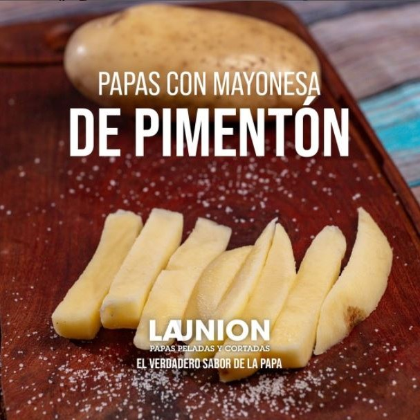

Mayonesa de pimenton
Para un bol de mayonesa preparada, una cucharadita de pimentón.
Mezclamos a mano y añadimos, si te gusta, un par de golpes de comino molido. IDeal para acompañar a verduras
cocidas o a la plancha, moluscos (perfecta para el pulpo asado o cocido), pescados, carnes a la plancha y por
supuesto nuestras #papas bien fritas y crocantes
Ketchup casero
El ketchup casero es una salsa facilísima de preparar y su sabor es mucho más natural que el envasado. (como
nuestras papas üòú)
- INGREDIENTES
- 1 kilo de tomate triturado (puede ser envasado)
- 1 cebolla pequeña
- diente de ajo pequeño o ajo en polvo
- golpes de jengibre en polvo
- 2 golpes de clavo molido
- 3 golpes de canela en polvo
- 1 dl de vinagre de manzana (o de vino blanco suave)
- 1 cucharada de miel
- 2 cucharaditas de azúcar blanca o morena
y pimienta negra molida o pimienta de Cayena si quieres un punto picante
- ELABORACIÓN:
Cortamos la cebolla muy fina y laminamos el diente de ajo. Lo trituramos en la batidora con el
tomate y lo ponemos
al fuego en una cazuela.
Cuando notemos que la salsa empieza a espesar y a reducir agregamos el resto de los ingredientes
Ponemos todo a cocer con el tomate al fuego ponerla a cocer con el tomate a fuego suave sin dejar de revolver
hasta lograr un puré seco. Agregar el vinagre, el azúcar, las especias, sal, pimienta y cocinar a fuego suave
hasta que se reduzca a la mitad. Cuando esté frío envasar en frascos esterilizados con tapa hermética.
Info: @cookpad_recetas